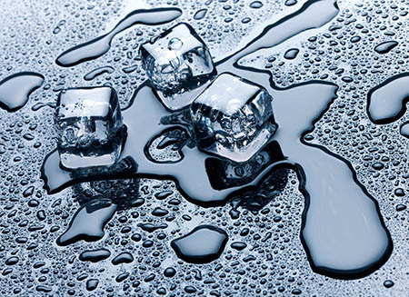
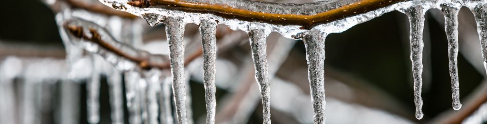
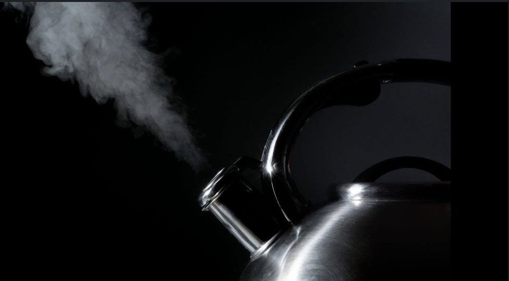
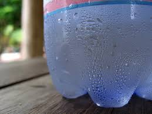
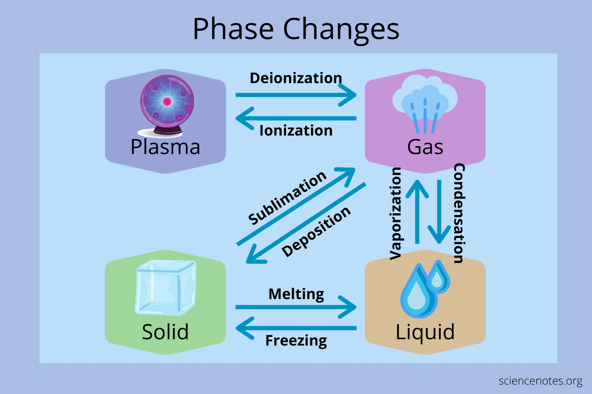

Melting (Solid → Liquid)
Melting is the process where a solid turns into a liquid upon heating. As temperature increases, particles in a solid gain kinetic energy and begin to vibrate more vigorously. At a specific temperature known as the melting point, these vibrations become strong enough to overcome the forces holding the particles in fixed positions, allowing the substance to become a liquid.
Example: Ice melting into water at 0°C.
Freezing (Liquid → Solid)
Freezing occurs when a liquid loses energy and turns into a solid. As temperature drops, the motion of particles slows down. At the freezing point (same as melting point for pure substances), particles arrange into a fixed, orderly structure. This process is exothermic, releasing energy to the surroundings.
Example: Water freezing into ice at 0°C.
Boiling / Evaporation (Liquid → Gas)
This is the process where a liquid changes into a gas. Boiling happens at the boiling point, where bubbles of gas form within the liquid and rise to the surface. Evaporation is a slower process that can occur at temperatures below the boiling point, typically only at the surface of the liquid. Both require heat energy (endothermic).
Example: Water boiling at 100°C; puddles evaporating in the sun.
Condensation (Gas → Liquid)
Condensation is the process where a gas loses energy and turns into a liquid. As gas particles cool down, their kinetic energy decreases, and they come closer together, forming intermolecular attractions. This process releases heat (exothermic).
Example: Water droplets forming on the outside of a cold glass.
Sublimation (Solid → Gas)
Sublimation is the direct change of a solid to a gas without passing through the liquid phase. This occurs when a solid gains enough energy for its particles to break free directly into the gas phase. Sublimation usually occurs under low pressure and specific temperature conditions.
Example: Dry ice (solid CO₂) sublimating into carbon dioxide gas.

Deposition (Gas → Solid)
Deposition is the reverse of sublimation, where a gas transforms directly into a solid without becoming a liquid. This process releases energy and typically occurs when gas particles lose energy rapidly.
Example: Frost forming on cold surfaces from water vapor in the air.

Ionization (Gas → Plasma)
Ionization is the process in which a gas is given enough energy that its atoms or molecules lose electrons, forming a collection of positive ions and free electrons called plasma. Plasma is often referred to as the fourth state of matter and is found in stars and lightning.
Example: The formation of plasma in a neon light or the Sun’s core.
Recombination (Plasma → Gas)
Recombination, also called deionization, is the reverse of ionization. It occurs when free electrons recombine with ions, neutralizing the plasma and returning it to the gaseous state. This process often emits light or other forms of energy.
Example: The fading glow of a neon sign once the power is turned off.
Summary
Written by Thenura Dilruk